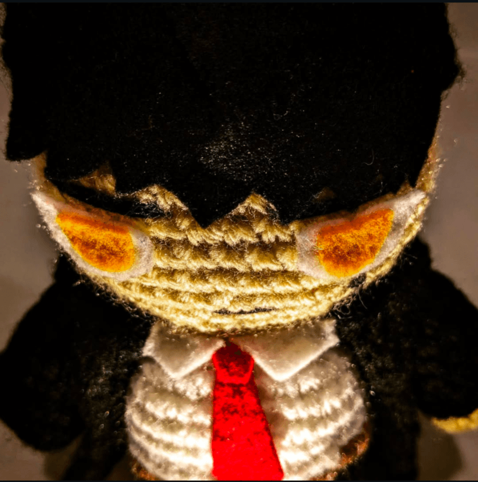
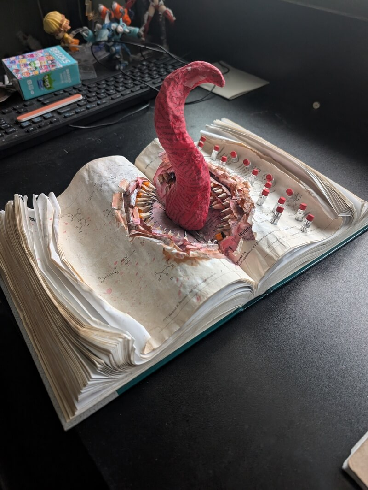

ᯓ★ About Me

Benjamin Lee is a Bay Area-based artist and a Bachelor of Fine Arts student at San José State University, graduating in the spring of 2026. Growing up immersed in comics, cartoons, anime, and video games, he was captivated by their vibrant storytelling, dynamic action, and striking visuals. These early influences sparked his passion for creation, leading him to experiment with everything from Legos and papier-mâché to pipe cleaner action figures.
At SJSU, Benjamin has expanded his artistic practice, exploring a wide range of mediums, including crochet, sculpture, and digital media. His work often reflects his love for storytelling and visually compelling narratives, aiming to create pieces that are not only fun and cool but also invite viewers to share in his personal joy and enthusiasm for life.
Through his art, Benjamin seeks to break free from societal expectations and labels, focusing instead on creating work that is authentic and meaningful to him. Whether it’s a crochet installation or a playful homage to his favorite media, his goal is to inspire others to embrace their own creativity and find beauty in the unexpected.
ᯓ★ My Work

Predefinied Artistic Identity
(BFA showcase)
BFA project about the confinment of what it means to be an artist when all one wants to do is make things I enjoy.

Medal of Dishonor
A medal of dishonor made in Intro to Sculpting call to award those who are sore winners and believe they are top dog.

Chopsticks Holding Noodles
(Implied motion Practice)
A practice piece on welding and attempting to create something with implied motion.
{kind=link}

DEVOUR
Found objects project about how school textbooks are expensive and feel like they're eating at my wallet.
{kind=link}
{kind=link}
ᯓ★Contact Me
Email: benjamin.lee01@sjsu.edu